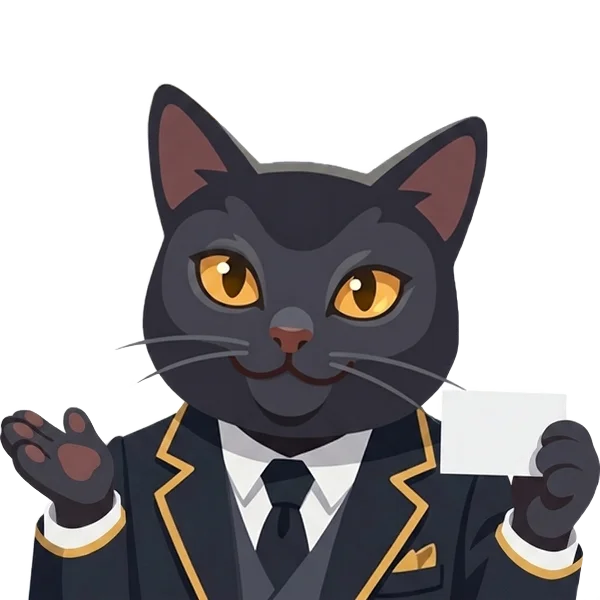
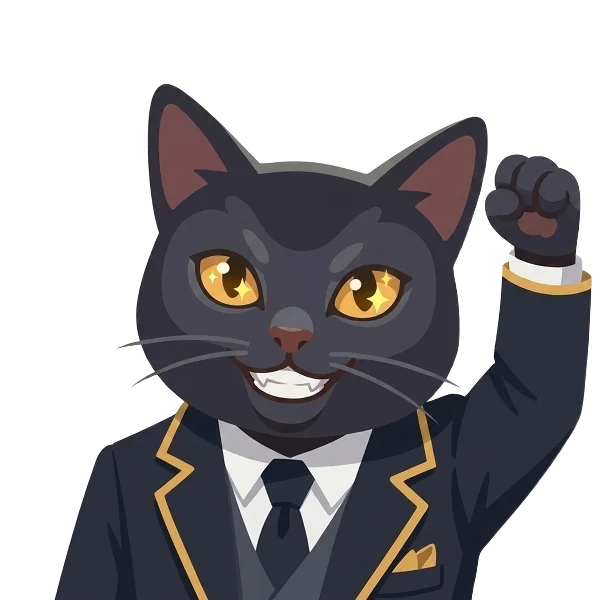
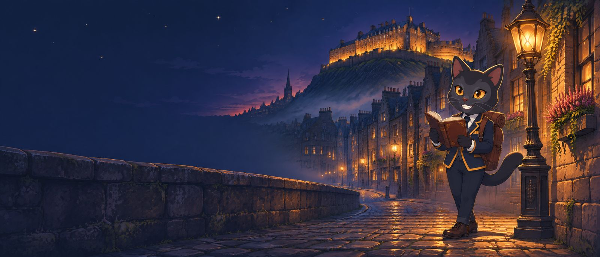
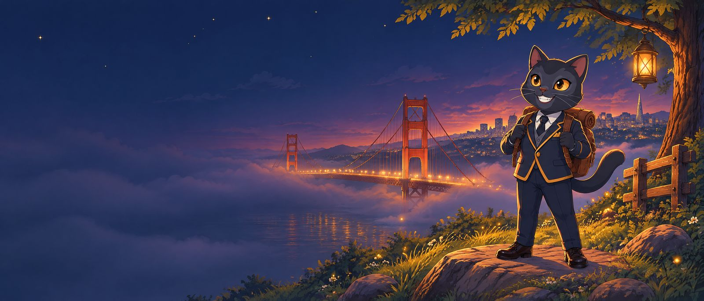

Welcome!
Welcome = bienvenido



Good to see you! Pick up where you left off.¡Qué bueno verte! Sigue por donde ibas.Vesper
Your library
Your teacher tells you which book to open.Tu profesor te indica qué libro y lección corresponde a tu clase.
¿Qué quieres repasar?
Ve directo a la lección. Prueba con “pasado simple”, “entrevista de trabajo” o “aeropuerto”.
Core Basics — Fundamentos
4 librosTo Be or Not To Be
Identidad, presentaciones y lo esencial.
VocabularySpeakingAbrir libro Core Basics · Nivel 2Do I Know?
Rutinas, preguntas y presente simple.
GrammarSpeakingAbrir libro Core Basics · Nivel 3Have I Been?
Pasado, experiencias e historias.
GrammarSpeakingAbrir libro Core Basics · Nivel 4Use It!
Sin gramática nueva: usa lo que ya sabes y habla mucho.
SpeakingGrammarAbrir libroCore Practice — Talleres
6 librosReal-Life Talk
Listening y speaking con audio en cada lección.
ListeningSpeakingAbrir libro Core Practice · Nivel 2Legends & Mysteries
Lectura y escritura: leyendas, mitos y misterios.
ReadingWritingAbrir libro Core Practice · Nivel 3Debate & Discovery
Las 4 destrezas: debate y descubrimiento.
ListeningSpeakingReadingWritingAbrir libro Core Practice · Nivel 4Stories on Stage
Arte y literatura: talleres orales.
SpeakingWritingAbrir libro Core Practice · Nivel 5Future Tech
Futuro y tecnología: lectura y escritura.
ReadingWritingAbrir libro Core Practice · Nivel 6Pop Culture
Cultura pop y sociedad: dominio de las 4 destrezas.
ListeningSpeakingReadingWritingAbrir libro
Core Grammar — Gramática
3 librosGrammar Foundations
Drills fundamentales para consolidar la base.
GrammarAbrir libro Core Grammar · Nivel 2Grammar in Context
Estructuras complejas aplicadas en contexto.
GrammarWritingAbrir libro Core Grammar · Nivel 3Grammar Mastery
Estilo, matices y excepciones del inglés avanzado.
GrammarWritingAbrir libro
Certification — Certificaciones y exámenes
6 librosGateway
Tu primera certificación: B1 Preliminary, IELTS 4.5–5.5 y TOEFL con drills cronometrados.
ListeningSpeakingReadingWritingAbrir libro Certification Path II · B2Ascent
B2 First e IELTS 5.5–6.5: paráfrasis, distractores y escritura estructurada.
ListeningSpeakingReadingWritingAbrir libro Certification Path III · C1–C2Summit
CAE, CPE e IELTS 7.0+: matiz, registro y resistencia de examen.
ListeningSpeakingReadingWritingAbrir libro Certification Prep · IntensivoBand Booster
Manual de bandas: drills cronometrados, modelos Band 6/8 y simulacro final.
ListeningSpeakingReadingWritingAbrir libro Exam Prep · Vol. 1Syntax & Strategy
Sintaxis avanzada y estrategia de examen.
GrammarReadingAbrir libro Exam Prep · Vol. 2Words in Action
Vocabulario temático y práctica aplicada.
VocabularyReadingAbrir libroBusiness — Inglés de negocios
3 librosOffice Survival
Inglés de oficina de supervivencia: llamadas, correos, juntas y clientes.
SpeakingWritingAbrir libro Business English Premium · B2Meetings & Pitches
Comunicación corporativa efectiva: pitch, juntas y reportes con audio en cada lección.
SpeakingListeningAbrir libro Business Path III · C1Influence
Persuasión, negociación, liderazgo y el sales pitch final.
SpeakingWritingAbrir libroOtros cursos
7 librosConversation 1
20 videos reales, 20 pláticas: tu bootcamp de conversación (A2–B1).
SpeakingListeningAbrir libro Daily Life English · Vol. 0Hi! How’s it going?
Club de conversación: las frases que un nativo usa todos los días (A0–A1).
SpeakingListeningAbrir libro Daily Life English · Vol. 1Out and About
Inglés social para el día a día: planes, restaurantes, viajes, compras y trámites sencillos (A2).
SpeakingListeningAbrir libro Daily Life English · Vol. 2Grown-Up Life
La vida adulta en inglés: renta, servicios, trabajo, banco, seguros y salud (B1).
SpeakingReadingAbrir libro Aviation EnglishCabin Crew
Inglés para tripulación de cabina: seguridad, emergencias, primeros auxilios y servicio a bordo.
SpeakingListeningAbrir libro Political English · B2–C1Global Affairs
Diplomacia, política pública y debate civil.
ReadingSpeakingAbrir libro Evaluación con tu profesorAdvanced Diagnostic
Evaluación integral: se realiza con tu profesor.
Abrir examen